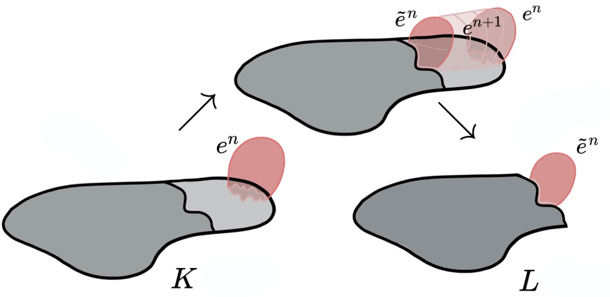
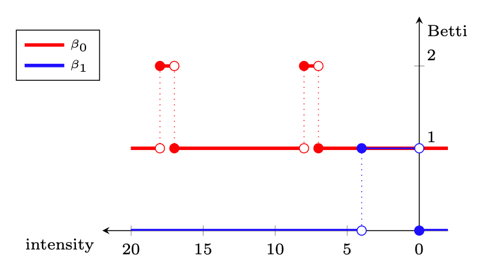
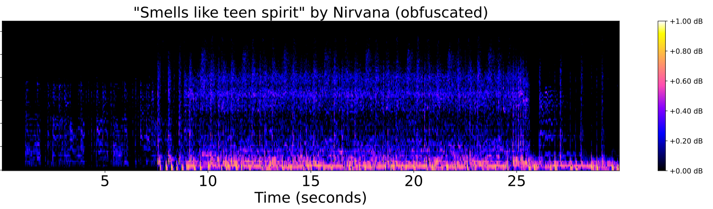
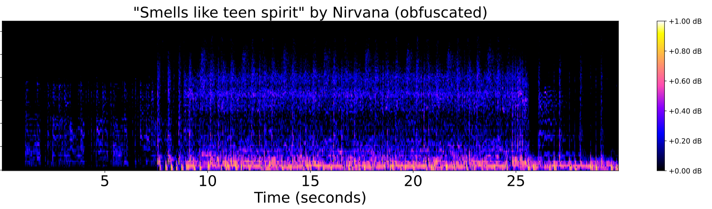

Geometric Inference & Combinatorial Topology
for
Data & Models
XIMENA FERNANDEZ
COMBINATORIAL HOMOTOPY THEORY
GEOMETRIC INFERENCE
TOPOLOGICAL DATA ANALYSIS
1. Combinatorial methods in low-dimensional topology
The Andrews-Curtis Conjecture
Based on:
X. Fernandez. 'Morse theory for group presentations', Trans. Amer. Math. Soc. 377 (2024), 2495-2523.
1. Combinatorial methods in low-dimensional topology
The Andrews-Curtis Conjecture
Conjecture [Andrews & Curtis, 1965]. Any finite balanced presentation $\mathcal{P}=\langle x_1,\dots,x_n | r_1,\dots,r_n\rangle$ of the trivial group can be transformed into the empty presentation $\langle ~|~\rangle$ by a finite sequence of the following operations:
- $r_i \leadsto r_i^{-1}$
- $r_i \leadsto r_i r_j$ for some $j \neq i$
- $r_i \leadsto wr_i w^{-1}$ for some $w$ in the free group $F(x_1, x_2, \dots, x_n)$
- add a generator $x_{n+1}$ and a relator $r_{n+1}:=x_{n+1}$, or the inverse of this operation.
Potential counterexamples.
- $\mathcal{P}=\langle x, y~|~ xyx = yxy,~ x^n = y^{n+1}\rangle,~n\geq 2$ [Akbulut & Kirby, 1985]
- $\mathcal{P} = \langle x,y~|~x^{-1}y^n x = y^{n+1}, ~x = y^{-1}xyx^{-1}\rangle,~n\geq 2$ [Miller & Schupp, 1999]
- $\mathcal{P}=\langle x,y~| ~x=[x^m,y^n], y=[y^p,x^q]\rangle ,~n,m,p,q\in \mathbb{Z}$ [Gordon, 1984]
- $\dots$
1. Combinatorial methods in low-dimensional topology
The Andrews-Curtis Conjecture
Equivalent conjecture [Whitehead, 50'].
Any contractible simplicial complex of dimension 2 can be 3-deformed to a point.
CW-complexes of dim 2
$K_{\mathcal{P}}$

contractible complexes
3-deformations
$\longleftrightarrow$
$\longleftrightarrow$Group presentations
$\mathcal{P}= \langle x,y ~|~xyx^{-1}y^{-1}\rangle $
balanced presentations of the trivial group
AC-transformations
1. Combinatorial methods in low-dimensional topology
Discrete Morse Theory
Theorem [Forman, 1995] Let $K$ be a regular CW-complex and let $f:K\to \mathbb{R}$ be discrete Morse function. Then, $K$ is homotopy equivalent to a CW-complex $\tilde K$ with a cell for every critical cell of $f$.


1. Combinatorial methods in low-dimensional topology
Discrete Morse Theory
Theorem [F.] Let $K$ be a regular CW-complex of dim $2$ and let $f:K\to \mathbb{R}$ be discrete Morse function. Then, $K$ 3-deforms to a constructible CW-complex $\tilde K$ with a cell for every critical cell of $f$.

1. Combinatorial methods in low-dimensional topology
The Andrews-Curtis Conjecture
Given $\mathcal P$ a group presentation and $f\colon K_{\mathcal P}\to \mathbb{R}$ a discrete Morse function with a single critical 0-cell, we developed an algorithm to compute the Morse presentation $\mathcal{P}_{\tilde K_{\mathcal P}}$, which satisfies $\mathcal{P}_{\tilde K_{\mathcal P}}\sim_{AC} \mathcal P$.
CW-complexes of dim 2
$K_{\mathcal{P}} + f\colon K\to \mathbb{R}$
$\nearrow\searrow^3 $
$\tilde K_{\mathcal P}$
$\longleftarrow$
$\longrightarrow$
Group presentations
$\mathcal{P}$
$\sim_{AC}$
$P_{\tilde K_{\mathcal P}}$
Package Finite-Topological-Spaces (Sage Math)
Package Posets (GAP) (joint with K. Piterman & I. Sadofschi Costa).
1. Combinatorial methods in low-dimensional topology
The Andrews-Curtis Conjecture
Given $\mathcal P$ a group presentation and $f\colon K_{\mathcal P}\to \mathbb{R}$ a discrete Morse function with a single critical 0-cell, we developed an algorithm to compute the Morse presentation $\mathcal{P}_{\tilde K_{\mathcal P}}$, which satisfies $\mathcal{P}_{\tilde K_{\mathcal P}}\sim_{AC} \mathcal P$.
CW-complexes of dim 2
$K_{\mathcal{P}} + f\colon K\to \mathbb{R}$
$\nearrow\searrow^3 $
$\tilde K_{\mathcal P}$
$\longleftarrow$
$\longrightarrow$
Group presentations
$\mathcal{P}$
$\sim_{AC}$
$P_{\tilde K_{\mathcal P}}$
Theorem [F.]
The following potential counterexamples satisfy the Andrews-Curtis conjecture:
$\bullet ~~\mathcal{P}=\langle x, y~|~ xyx = yxy,~ x^2 = y^{3}\rangle$* [Akbulut & Kirby, 1985]
$\bullet ~~\mathcal{P}= \langle x,y~|~x^{-1}y^3 x = y^{4}, ~x = y^{-1}xyx^{-1}\rangle$ [Miller & Schupp, 1999]
$\bullet ~~\mathcal{P}=\langle x,y~| ~x=[x^{-1},y^{-1}], y=[y^{-1},x^q]\rangle, \forall q \in \mathbb{N}$ [Gordon, 1984]
* First proved by Miasnikov in 2003 using genetic algorithms.
2. Density-based geometric inference
Fermat distance
Based on:
X. Fernandez, E. Borghini, G. Mindlin, P. Groisman. 'Intrinsic persistent-homology via density-based metric learning'. Journal of Machine Learning Research. 24 (2023) 1-42.
2. Density-based geometric inference
Fermat distance
Let $\mathbb{X}_n = \{x_1,...,x_n\}\subseteq \mathbb{R}^D$ be a finite sample.
Assume that:
- $\mathbb{X}_n$ is a sample of a compact Riemannian manifold $\mathcal M$ of dimension $d$.
- The points are sampled according to a density $f\colon \mathcal M\to \mathbb R$.
Goal: Infer $'H_\bullet(\mathcal M, f)'$ from $\mathbb X_n$.


Density-based geometry
UNDERLYING SPACE
$\mathcal M \subseteq \mathbb{R}^D$ manifold, $f:\mathcal{M}\to \mathbb{R}_{>0}$ density.
For $q>0$, deformed Riemannian distance * in $\mathcal{M}$ \[ d_{f,q}(x,y) = \inf_{\gamma:x\sim y} \int_{\gamma}\frac{1}{f(\gamma_t)^{q}}||\dot \gamma_t||dt. \]

* Here, if $g$ is the inherited Riemannian tensor, then
$d_{f,q}$ is the Riemannian distance induced by $g_q= f^{-2q} g$.
Density-based geometry
UNDERLYING SPACE
$\mathcal M \subseteq \mathbb{R}^D$ manifold, $f:\mathcal{M}\to \mathbb{R}_{>0}$ density.
For $q>0$, deformed Riemannian distance * in $\mathcal{M}$ \[ d_{f,q}(x,y) = \inf_{\gamma:x\sim y} \int_{\gamma}\frac{1}{f(\gamma_t)^{q}}||\dot \gamma_t||dt. \]
* Here, if $g$ is the inherited Riemannian tensor, then
$d_{f,q}$ is the Riemannian distance induced by $g_q= f^{-2q} g$.
DATA
$\mathbb{X}_n = \{x_1,...,x_n\}\subseteq \mathbb{R}^D$ sample.
For $p> 1$, Fermat distance in $\mathbb{X}_n$ \[ d_{\mathbb{X}_n, p}(x,y) = \inf_{\gamma:x\sim y} \sum_{i=0}^{r}|x_{i+1}-x_i|^{p}. \]

Python library fermat
Convergence results
Theorem (F., Borghini, Mindlin, Groisman)
\[\big(\mathbb{X}_n, C(n,p,d) d_{\mathbb{X}_n,p}\big)\xrightarrow[n\to \infty]{GH}\big(\mathcal{M}, d_{f,q}\big) ~~~ \text{ for } q = (p-1)/d\]
$~~~~~~~$
Convergence results
Theorem (F., Borghini, Mindlin, Groisman)
\[\big(\mathbb{X}_n, C(n,p,d) d_{\mathbb{X}_n,p}\big)\xrightarrow[n\to \infty]{GH}\big(\mathcal{M}, d_{f,q}\big) ~~~ \text{ for } q = (p-1)/d\]
Let $\mathcal{M}$ be a closed smooth $d$-dimensional Riemannian manifold embedded in $\mathbb{R}^D$. Let $\mathbb X_n\subseteq \mathcal{M}$ be a set of $n$ independent sample points with common smooth density $f:\mathcal{M}\to \mathbb{R}_{>0}$.
Given $p>1$ and $q=(p-1)/d$, there exists a constant $\mu = \mu(p,d)$ such that for every $\lambda \in \big((p-1)/pd, 1/d\big)$ and $\varepsilon>0$ there exist $\theta>0$ satisfying \[ \mathbb{P}\left( d_{GH}\left(\big(\mathcal{M}, d_{f,q}\big), \big(\mathbb{X}_n, {\scriptstyle \frac{n^{q}}{\mu}} d_{\mathbb{X}_n, p}\big)\right) > \varepsilon \right) \leq \exp{\left(-\theta n^{(1 - \lambda d) /(d+2p)}\right)} \] for $n$ large enough.
Fermat distance


Persistent homology
INPUT: Metric space $(\mathbb{X}_n, d_{\mathbb{X}_n})$ $\leadsto$ OUTPUT: Persistence diagram $\mathrm{dgm}(\mathbb{X}_n, d_{\mathbb{X}_n})$


Persistent homology
INPUT: Metric space $(\mathbb{X}_n, d_{\mathbb{X}_n})$ $\leadsto$ OUTPUT: Persistence diagram $\mathrm{dgm}(\mathbb{X}_n, d_{\mathbb{X}_n})$
Persistent homology
Corollary (F., Borghini, Mindlin, Groisman)
\[\mathrm{dgm}(\mathbb{X}_n, {C(n,p,d)} d_{\mathbb{X}_n,p})\xrightarrow[n\to \infty]{B}\mathrm{dgm}(\mathcal{M}, d_{f,q}) ~~~ \text{ for } q = (p-1)/d\]
3. Topological data analysis
Audio ID
Research collaboration with SpotifyBased on:
W. Reise, X. Fernandez, M. Dominguez, H.A. Harrington, M. Beguerisse-Diaz. 'Topological fingerprints for Audio Identification'. SIAM Journal of Data Science. Vol. 6, Iss. 3 (2024).
3. Topological data analysis
Audio ID
Given two audio tracks, identify whether they correspond to the same audio content .


3. Topological data analysis
Audio ID


3. Topological data analysis
Audio ID

Betti curve
3. Topological data analysis
Audio ID
 



 $~$
$~$


$~~~~~~~~~~~t_0~~~~~~~~~~~~~~~~~t_1~~~~~~~~~~~~~~~~~~t_2~~~~~~~~~~~~~~~~~t_3~~~~~~~~~~~~~~~~~t_4~~\dots~~~~~~~~~~~~~~~~t'_0~~~~~~~~~~~~~~~~~t'_1~~~~~~~~~~~~~~~~~t'_2~~~~~~~~~~~~~~~~t'_3~~~~~~~~~~~~~~~~t'_4~~\dots$

Pearson correlation: 0.98
3. Topological data analysis
Audio ID


Current and future projects
1. COMPUTATIONAL DISCRETE MORSE THEORY
with V. Nanda (Oxford)
$K + f:K\to \mathbb{R} \leadsto \tilde K$
- Criteria for regularity of Morse CW-complex $\tilde K$ (homeomorphisms as attaching maps).
- Algorithmic description of $\tilde K$ for all dimensions.

2. KURAMOTO MODELS OVER GEOMETRIC GRAPHS & HODGE THEORY
with P. Groisman (Buenos Aires)
Kuramoto model
$
\frac{d\theta_i}{dt} = \omega_i + \sum_{j=1}^{N} \omega_{ij}\sin(\theta_j - \theta_i)$
$\scriptsize \theta_i\in [0,2\pi), w_{ij}$ strenght connection
- Hodge Theory for solutions of Kuramoto model over geometric graphs from manifolds.

3. PERSISTENCE BEYOND HOMOLOGY
- Persistent fundamental group.
- Persistent knot invariants.

COMBINATORIAL HOMOTOPY THEORY
GEOMETRIC INFERENCE
TOPOLOGICAL DATA ANALYSIS
THANKS!